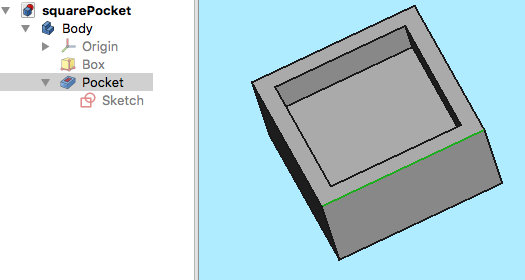
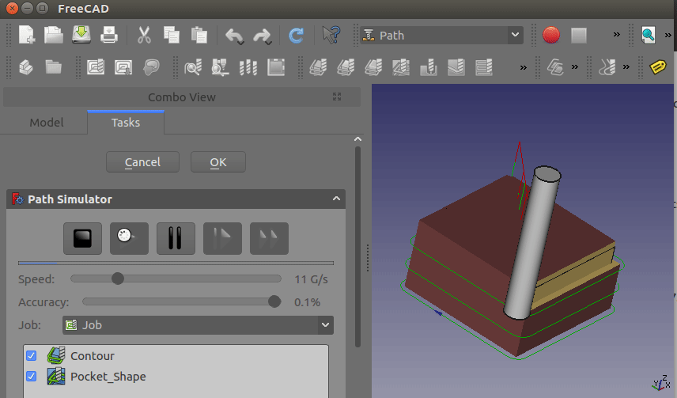

CAM Walkthrough for the Impatient
- Topic
-
Arbeitsbereich CAM
- Level
-
Anfänger/Mittelmäßig
- Time
-
15 Minuten
- Author
-
Chrisb
- Fcversion
-
0.19
Ziel
Veranschaulichen der Erstellung eines Auftrags des  Arbeitsbereichs CAM, abgeleitet von einem 3D-Modell. Anschließend wird dialekt-richtiger G-Code für eine Ziel-CNC-Fräse erzeugt.
Arbeitsbereichs CAM, abgeleitet von einem 3D-Modell. Anschließend wird dialekt-richtiger G-Code für eine Ziel-CNC-Fräse erzeugt.
Das 3D Modell
1. Das Projekt startet mit einem einfachen FreeCAD Modell entworfen im  Part Design ein Würfel mit einer rechteckigen Tasche.
Part Design ein Würfel mit einer rechteckigen Tasche.
::

Oben: Erstellt in der  Part Design einschließlich eines Körpers, eines Kastens mit einer Tasche, basierend auf einer in der
Part Design einschließlich eines Körpers, eines Kastens mit einer Tasche, basierend auf einer in der  XY Ebene
orientierten Skizze.
XY Ebene
orientierten Skizze.
2. Ist das 3D-Modell fertiggestellt, wird mit der Arbeitsbereichsauswahl (Ausklappmenü) zum Arbeitsbereich  CAM gewechselt.
CAM gewechselt.
Der Auftrag
3. Jetzt den CAM-Auftrag erstellen, durch Auswahl einer der folgenden Methoden:
-
Die Schaltfläche
 Auftrag drücken.
Auftrag drücken. -
Das Tastaturkürzel P dann J.
-
Den Menüeintrag auswählen.

:: ;;
Oben: Dialog CAM-Auftrag erstellen
4. Dies öffnet ein Dialogfeld Auftrag erstellen. In diesem Dialog OK anklicken, um den Körper (Body-Objekt) als Basismodell ohne Vorlage zu akzeptieren.
Auftragseinrichtung
5. Das Auftragsbearbeitungsfenster öffnet sich im Aufgaben-Fenster, und das Modellansichtsfenster zeigt das Material als einen Drahtgitterwürfel, der den Grundkörper umgibt. Der Einrichtungsreiter ist ausgewählt.
Auftragsausgabe
6. Der Ausgabereiter legt den Pfad, den Namen und die Erweiterung der Ausgabedatei sowie den Postprozessor fest. Für fortgeschrittene Benutzer können Postprozessor-Argumente angepasst werden (der Mauszeiger darüber zeigt QuickInfos zu den allgemeinen Argumenten an).
::

Oben: Dialog CAM-Auftrag bearbeiten mit ausgewähltem Ausgabe-Reiter
Auftragswerkzeuge
::

Oben: Dialog CAM-Ausgabe bearbeiten mit ausgewähltem Werkzeuge-Reiter
7. Das Standardwerkzeug anpassen, indem es ausgewählt und auf die Schaltfläche Bearbeiten geklickt wird. Dies öffnet das Fenster für die Werkzeugsteuerung.
::

Above: Dialog CAM-Auftrag bearbeiten, Werkzeuge, Unterbereich Steuerung
8. Der dem Werkzeug gegebene Name und die Werkzeugnummer entsprechen der Werkzeugnummer der Maschine. Im Dialog (siehe oben) ist es Werkzeug Nr. 4. Die Werkzeugsteuerung ist für horizontale und vertikale Vorschübe von 2 mm/s und eine Spindeldrehzahl von 2000 U/min ausgelegt.
9. Das Unterbereich Werkzeug der Werkzeugsteuerung auswählen. Den Durchmesser festlegen (und - falls das Werkzeug  CAM-Simulator später verwendet werden soll: einen Schneidenwinkel und eine Schneidenhöhe hinzufügen).
CAM-Simulator später verwendet werden soll: einen Schneidenwinkel und eine Schneidenhöhe hinzufügen).
::

Oben: Dialog CAM-Auftrag bearbeiten, Werkzeuge, Unterbereich Werkzeug
10. Die Werte werden mit OK bestätigt.
Hinweis: Für einen einfachen Zugriff können alle Werkzeuge vordefiniert und mit dem  Werkzeug-Manager ausgewählt werden.
Werkzeug-Manager ausgewählt werden.
Auftragsarbeitsplan
Der Reiter Arbeitsplan wird anfangs leer dargestellt. Er wird dann von der Abfolge von Auftragsvorgängen, Teil-CAM-befehlen und CAM-Verschönerungen ausgefüllt. Die Reihenfolge dieser Elemente wird hier geordnet.
Dieser Baum wird nach der Konfiguration des Auftrags angezeigt, sobald der CAM-Auftrag aufgeklappt ist:
::

Die Pfadabläufe
11. Es werden zwei Bearbeitungen hinzugefügt, um Fräsbahnen für diesen CAM-Auftrag zu erzeugen. Der Ablauf Profil erzeugt eine Bahn um den Kasten herum und der Ablauf Tasche erzeugt eine Bahn für die Innentasche.
12. Fürs Erste werden wir es einfach halten. Die Schaltfläche  Profil öffnet das Konturpaneel. Nach der Bestätigung mit OK unter Verwendung der Standardwerte, wird der der grüne Pfad um das Objekt herum sichtbar.
Profil öffnet das Konturpaneel. Nach der Bestätigung mit OK unter Verwendung der Standardwerte, wird der der grüne Pfad um das Objekt herum sichtbar.
13. Den Taschenboden auswählen und dann mit der Schaltfläche  Tasche das Fenster Taschenform öffnen. Die Standardwerte für Basisgeometrie, Tiefen und Höhen werden verwendet und das Unter-Panel Operation ausgewählt sowie die Schrittweite in Prozent auf 50 eingestellt.
Tasche das Fenster Taschenform öffnen. Die Standardwerte für Basisgeometrie, Tiefen und Höhen werden verwendet und das Unter-Panel Operation ausgewählt sowie die Schrittweite in Prozent auf 50 eingestellt.
::

Oben: Dialog Taschenform mit dem ausgewählten Unterbereich Operation
14. Das Muster wird in "Versatz" geändert, und die Auftragsausführung wird für die Taschenkonfiguration mit OK bestätigt.
Das Ergebnis ist ein Modell mit zwei Pfaden:
::

Oben: Ergebnis mit einem Modell mit zwei Bewegungsbahnen
Pfade überprüfen
Es gibt zwei Möglichkeiten, die erstellten Pfade zu überprüfen. Der G-Code kann überprüft werden, einschließlich der Hervorhebung der entsprechenden Pfadsegmente. Der Fräsprozess des CAM-Auftrags kann auch simuliert werden, um die idealisierten Werkzeugbahnen zu demonstrieren, die für die Werkzeuggeometrien zum Fräsen des Rohteils erforderlich sind.
Um den G-Code zu untersuchen, wird das Werkzeug  CAM-Befehle untersuchen verwendet. Durch Auswählen der entsprechenden G-Code-Zeilen innerhalb des G-Code-Inspektionsfensters werden einzelne Pfadsegmente hervorgehoben.
CAM-Befehle untersuchen verwendet. Durch Auswählen der entsprechenden G-Code-Zeilen innerhalb des G-Code-Inspektionsfensters werden einzelne Pfadsegmente hervorgehoben.
::

Above: Das Werkzeug CAM-Befehle untersuchen öffnet den Dialog G-Code-Inspektion
Um die Simulation zu beginnen wird das Werkzeug  CAM-Simulator verwendet.
CAM-Simulator verwendet.
Geschwindigkeit und Genauigkeit einstellen und die Simulation mit der  Wiedergabetaste (Play) starten.
Wiedergabetaste (Play) starten.
::

Oben: CAM-Simulator in Betrieb
Soll die Simulation beendet werden, wird die Schaltfläche Abbrechen angeklickt, dadurch wird das für die Simulation erstellte Material entfernt. Wird OK angeklickt, wird dieses Objekt in deinem Auftrag behalten.
Nachbearbeitung des Auftrags
Der letzte Schritt zur Erzeugung von G-Code für die Zielfräse ist die Nachbearbeitung des Auftrags. Dabei werden die G-Codes in eine Datei ausgegeben, die auf die Ziel CNC Maschinensteuerung hochgeladen werden kann. So rufst du den Postprozessor auf:
-
Das Auftragsobjekt in der Baumansicht auswählen.
-
Das Werkzeug
 CAM Nachbearbeitung zum Nachbearbeiten der Datei auswählen. Dies öffnet ein G-Code Fenster, in dem die endgültige Ausgabedatei vor dem Speichern überprüft werden kann.
CAM Nachbearbeitung zum Nachbearbeiten der Datei auswählen. Dies öffnet ein G-Code Fenster, in dem die endgültige Ausgabedatei vor dem Speichern überprüft werden kann.
::

Oben: G-Code-Fenster, das die Überprüfung der endgültigen Ausgabedatei erlaubt